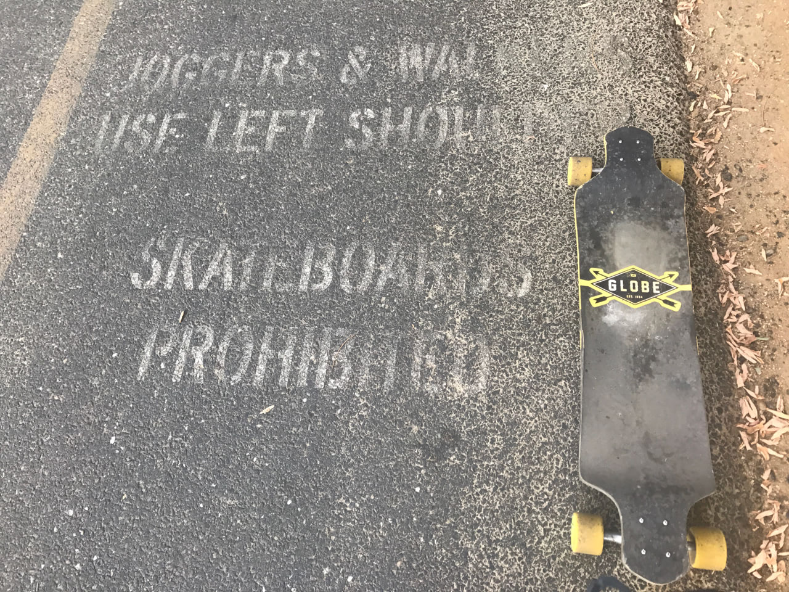
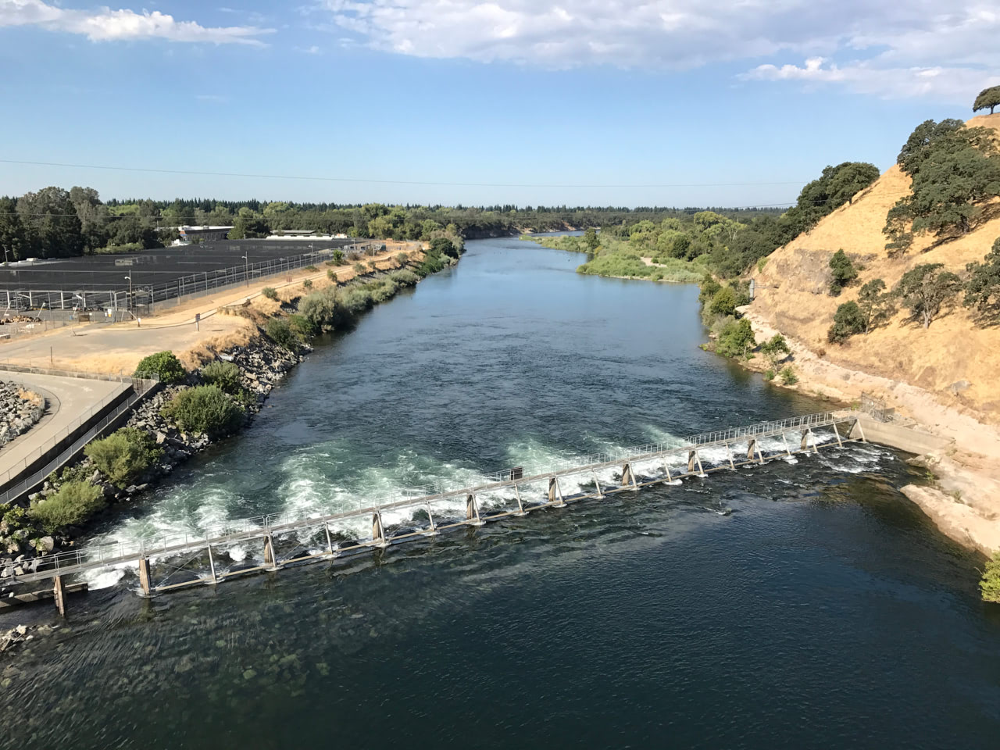

The name of the game today was beat the heat. When our plane touched down in Sacramento yesterday and we had to deplane and walk across the tarmac like animals, it was 101˚. Today’s forecast set the high at 107˚, to peak around 4:00. So I set my alarm early and was on the trail at 6:45, fifteen minutes after sunrise. It was already 80˚, by the way.
The American River Parkway officially begins a mile or two before where I joined it, in Old Town Sacramento. From there, it follows the American River east to the Folsom Reservoir. It’s also named the Jedediah Smith Memorial Trail, after an early white explorer who marveled at the beauty of the river as he colonized it away from its native inhabitants. You can read more about old Jedediah and see a detailed map in the trail brochure (4MB PDF). You may also notice “Skateboards are not permitted” in the Rules and Regulations.
This trail is the most like a tiny highway for bicycles that I’ve been on so far. It’s smooth, well-maintained asphalt with lane markings, signed exits with their own little off-ramps to intersecting city roads, and it passes under an interstate or two. Early in the morning, as the sun was still rising, I saw many turkey-ish birds and two majestic coyotes. And, yes, markings on the pavement every mile or so reminding me that skateboards were indeed prohibited.
However, for the majority of the day, no one seemed to care. I passed cyclists, joggers, and even rangers who didn’t acknowledge me whatsoever. The first third of the trail went by early enough in the day that there weren’t too many people out. The middle third was packed — this is clearly a popular exercise trail — and one guy finally called me out. He snapped “no skateboards allowed, buddy” at me as he passed on his bike, white ponytail whipping in the breeze out of a hole in his helmet. I shouted “thank you!” after him and carried a small grudge for a minute or two. Not too much farther along, an older gentleman was walking his dog in the opposite direction. The dog barked and lunged at me so violently that it pulled its owner down to the ground and I stopped to make sure he was okay. That made me feel guilty for giving him skinned knees as a direct result of breaking the rules, so I skated on a parallel road for a little bit afterward.
Not for long though! I rejoined the trail in time to cross over the river at the Nimbus Dam. Really steep grades getting up, over, and back down the bridge, so at least I was walking and not offending anyone. Back on the northern side of the river, I think the official American River Parkway section of the bike trail ends. There were conspicuously fewer “skateboards prohibited” signs, if any. Either way, I got back on the board, on the trail itself, and kept going.
This final third was more like the first: surrounded by more nature than people. I even got off the trail around mile 25 to clamber through some brush and up a small but decent hill. It was 10:15 in the morning and up to 90˚, and the panoramic view from the top was worth it.